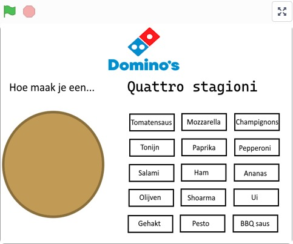

Portfolio

Ik programmeer al sinds ik op de basisschool zit, ik werkte toen in Scratch.
Sindsdien heb ik altijd al een fascinatie gehad met ICT en software engineering.
Over de jaren heb ik aan aardig wat projecten gewerkt die ik niet allemaal terug kan vinden.
Hieronder heb ik een collage gemaakt van een paar van mijn projecten over de jaren
waar ik het meest trots op ben. Enjoy!



Dominos Trainer
In 2023 werkte ik een tijdje bij mijn locale Domino’s.
Ik merkte een probleem tijdens de periode dat ik daar
werkte, ik vond het erg lastig om de toppings van
pizza’s te onthouden. Als oplossing hiervoor had ik op
Scratch een game gemaakt waar je dit kon oefenen.
Dit hielp enorm tijdens mijn werktijd daar!